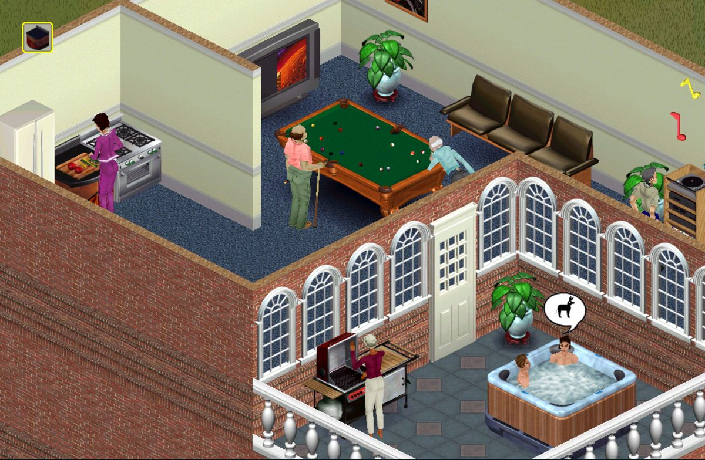

Lançado em 4 de fevereiro de 2000, The Sims 1 foi um jogo de simulação de desenvolvido pela Maxis e Electronic Arts. O jogo permitia que os jogadores criassem e controlassem seus famosos Sims, em um ambiente virtual. Sendo, a principio, um mero Spin-off da série de games Sim City, The Sims foi um sucesso instantâneo e se tornou um dos jogos mais vendidos de todos os tempos.
William Ralph "Will" Wright é designer de jogos americano e co-fundador da Maxis. Ele é conhecido como o designer original de três grandes sucessos do mundo dos Games: The Sims, SimCity e Spore, que é a mais recente série criado por ele. Will Wright conseguiu imaginar em sua mente um conceito completamente novo, onde ele e outras pessoas comandassem a história, ações, e tudo o que fosse possível, por meio de simuladores simples e práticos, porém, poderosos, que pudessem levar a imaginação do jogador aonde ele quiser.